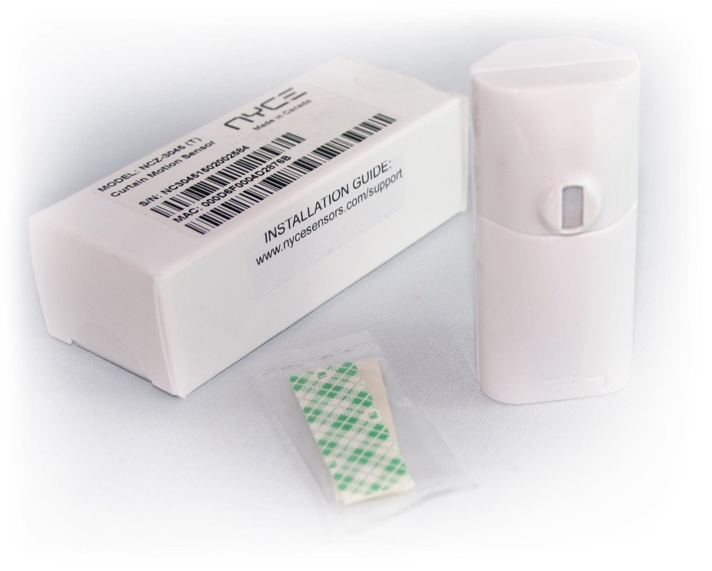

NYCE NCZ-HA Zigbee Curtain Motion Sensor¶

Brief information¶
NYCE’s wireless Curtain Motion Sensor combines the features of a wall-mounted Motion Sensor and a ZigBee (802.15.4) radio into a single device. Packed with intelligent HVAC features, the Curtain Motion Sensor expands your network’s possibilities – monitoring the environment and reporting on motion anywhere within the home - and all without any wires.
How to add to VENUS app¶
- Press “Add button” (button ‘+’) in app
- Insert battery and then press Button once
- Wait for VENUS scan & detect this device and inform in app

Configuration description¶
There is no configuration for this device.